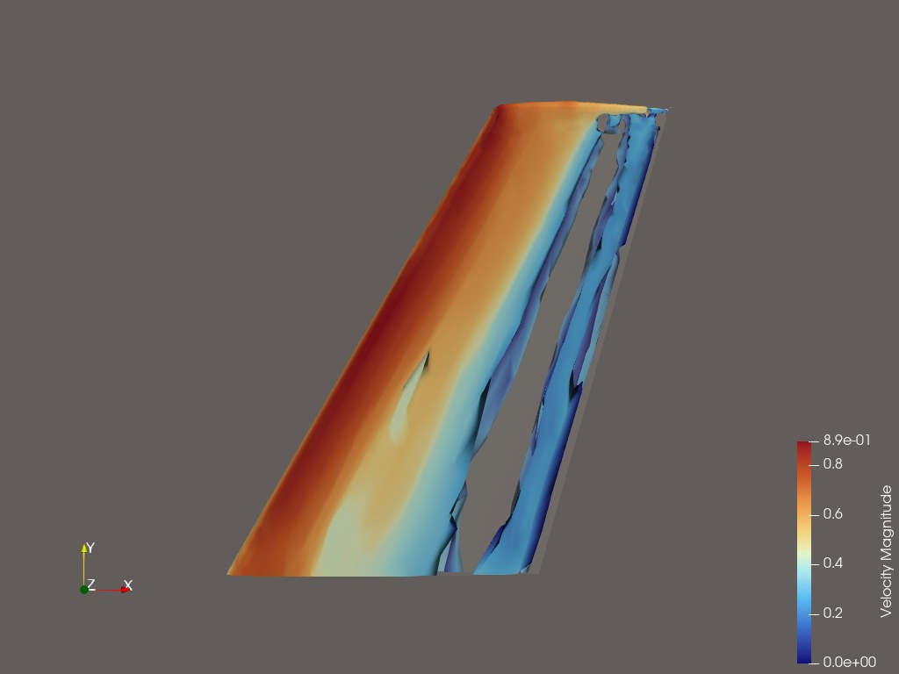
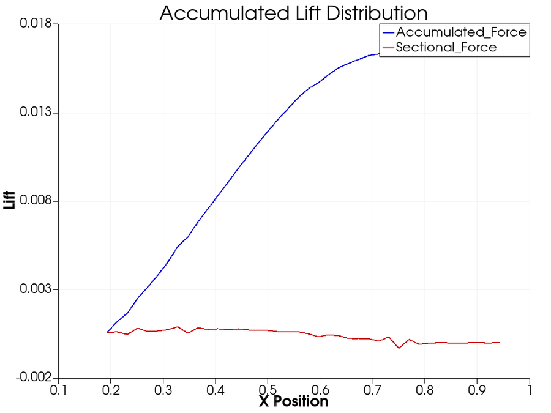
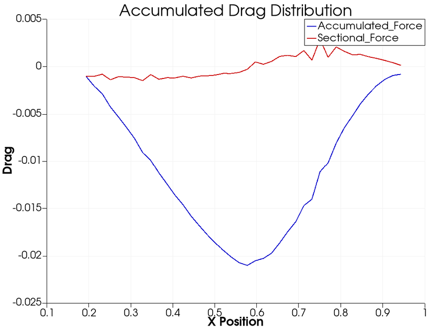
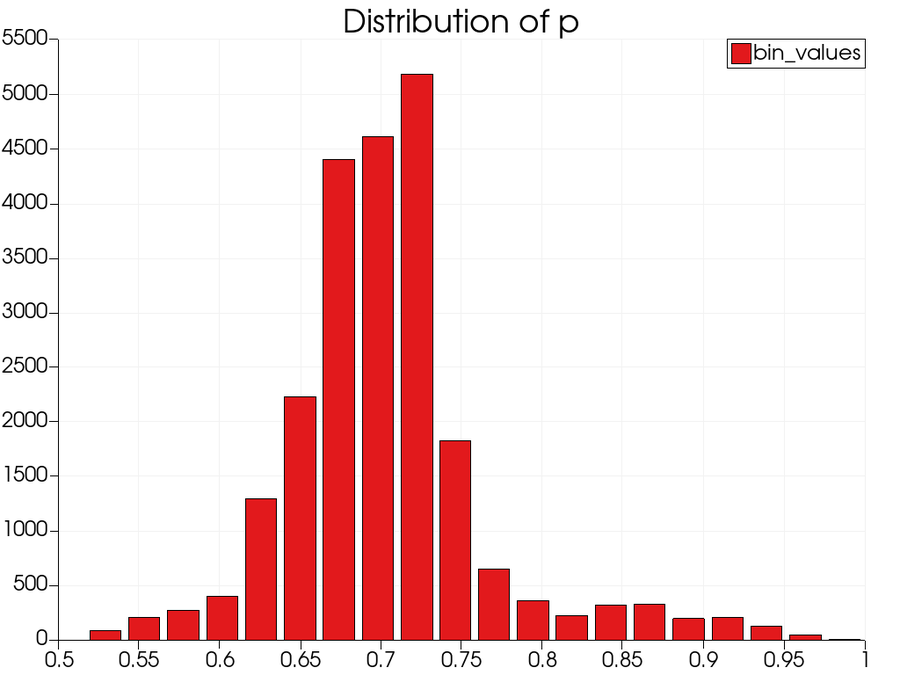

Usually a number in a config file. Write every hundredth timestep, because that is what the filesystem will take, and hope the one you needed was not among the other ninety-nine. That decision gets made before anyone has looked at the run.
Why the number in that config file is small: on Titan, compute bandwidth was 125 PB/s against 1.4 TB/s to storage. A gap near 89,000 : 1, and widening. Moreland, IEEE CG&A 36(2), 2016, Fig. 1
Catalyst does the analysis while the data is still in memory: on the solver's own nodes, streamed to neighbouring ones, or both. Never by way of the filesystem.
So instead of picking which timesteps to lose, you pick what to measure, and you get it for every one of them. Nor are you stuck with that choice: pipelines can be swapped while the solver runs, you can attach a session and look at something you had not planned for, and what the analysis finds can be fed back into the solve.




Four products from one production CFD run, requested in plain language while it was still solving. Catalyst served the live simulation to ParaView; trame drew the browser session; an MCP layer turned the question into filters. No solution files were written. The same session reads from disk instead, unchanged, when the run is already over.
The rest of this page answers four different questions. Take the one you came with; the others will still be here.
A WarpX timestep on Frontier produces a 5.75 billion element mesh, 1.16 TB. Post-hoc, all of it has to land on disk before you can look at any of it, and then be read back again to do the analysis. In situ, only the results you asked for are ever written.
timestep 0 · reduction n/a · pipeline render one frame + integrate a scalar
Where these numbers come from. The published WarpX timestep is a 5.75 billion element mesh at 1.16 TB, so N ≈ 1,792 on a side. Twenty integrated quantities are 160 bytes. A 1920×1080 frame is about 2 MB whatever the mesh size. A slice is N² = 3.2 million cells, and as data with six fields at single precision that is roughly 0.18 GB. Writing everything is 1.16 TB. Six orders of magnitude separate the first from the last, and the choice is yours, not the filesystem's. Only the last option registers on the lower bar. The other three are drawn as a marker because at this scale they are a rounding error, which is the entire argument.
This is not a choice between in situ visualization and post-processing. You may still write files, still load them in ParaView, still explore them afterwards. In situ is allows you to decide what gets extracted and which files, so what lands on disk is your say.
Nobody goes looking for in situ analysis. They go looking because the write-then-look workflow has started costing them something they can name.
They are all the same problem wearing different clothes: the decision about what to keep is made before anyone knows what matters.
Every run, someone decides which handful of timesteps we can afford to keep. We are guessing, and sometimes we guess wrong and rerun.
schedule: a rerun is not a storage problem. It is weeks and a second allocation.
Our engineering results come from sparse snapshots. Forces and flow structures between them are simply not measured.
fidelity: you are reporting on a sampled version of a simulation you paid to run in full.
A three-day job diverged in hour four and nobody knew until it finished.
machine time: nothing was watching, because watching meant waiting for the write.
An optimisation campaign is hundreds of runs. Storing full-field output for every ensemble member is not something we can do.
design cycle: the size of the space you can explore is set by your disk, not your solver.
We want to train a surrogate on the high-fidelity runs. The data it needs was thrown away at write time.
capability: you cannot train on timesteps that were never written.
Two solvers exchange fields every timestep, through the disk, across coupling code we wrote and now maintain ourselves.
headcount: bespoke plumbing that no one else can support and no one wants to own. Instrument the coupler instead →
The Catalyst API is an ABI-stable C interface. Your solver links
libcatalyst, a small BSD-licensed library with one header. The
ParaView implementation is discovered at run time.
ParaView is not in your build system, not in your dependency tree, and not in your support matrix.
The same three calls serve all three placements. Whether the pipeline executes on the solver's ranks, on a separate allocation fed over the network, or splits the difference by reducing in place and rendering elsewhere, is a launch-time decision. Your adaptor does not know which one it is feeding.
What runs at run time is a Python pipeline, and that is a wider door than it
sounds. Your solver's arrays arrive as NumPy, so NumPy, SciPy, pandas, PyTorch,
scikit-learn, Matplotlib and any wrapped C++ library are all in scope, operating
on live simulation state. Published in-situ training work does exactly this:
vtk_to_numpy on the field, torch.from_numpy, train,
plot the loss, render the prediction against ground truth, all in one script.
The ParaView implementation adds two decades of VTK on top: hundreds of filters, data reduction and resampling, temporal and unsteady analysis, statistics, particle tracking and parallel rendering. Or write your own implementation against the same API. Several groups have, including ADIOS2/Fides staging, a workflow composer, and a game-engine bridge.
A site that wants none of it ships nothing extra; a site that wants all of it sets an environment variable.
This is Catalyst 2. The version numbering matters because the previous one worked differently. Under the 1.0 API the implementation was linked in, and a published survey measured what that added to a statically built executable: 2.1 MB for the smallest edition up to 98 MB for full ParaView, replicated per process. Bauer et al., Computer Graphics Forum 35(3), 2016, Table 2. Under 2.0 the question does not arise: your binary carries the stub, and the implementation is a shared library the loader maps once per node.
And it is vendor-portable by construction. Conduit is API-agnostic; Viskores filters compile through Kokkos to CUDA, HIP, SYCL or OpenMP. The same integration pattern runs on NVIDIA, AMD MI300X and Intel Max GPUs without adaptor changes. And on unified-memory parts like Grace Hopper and MI300A the model only gets simpler.
A C interface because everything binds to C. There is a worked example for each: C, C++, Fortran 90 and Python. Your solver's language is not the question; whether it can describe its mesh is.
Swap implementations at run time with
CATALYST_IMPLEMENTATION_NAME and
CATALYST_IMPLEMENTATION_PATHS; Catalyst loads the named library with
dlopen and checks it for compatibility.
API reference.
No recompile, and pipelines themselves
can be added and
removed while the solver runs.
/* the entire integration surface */ #include <catalyst.h> // once, at startup catalyst_initialize(params); // every timestep: describe the mesh you already have conduit_node_set_path_external_float64_ptr( mesh, "fields/pressure/values", p, ncells); catalyst_execute(params); // once, at shutdown catalyst_finalize(params);
Fields are passed by pointer.
Catalyst reads your arrays in place: no copy, no reformat, GPU-resident data
stays on the GPU. A
D2Q9 lattice-Boltzmann
example keeps four field arrays in device memory for the whole run, hands
Catalyst the raw pointers through set_external, and analyses them
on the same buffer the solver just wrote, with no per-step transfer to host.
# the other side: your pipeline script, in Python from paraview.simple import * from vtk.util.numpy_support import vtk_to_numpy import numpy as np, torch def catalyst_execute(info): data = servermanager.Fetch(MergeBlocks(producer)) omega = vtk_to_numpy(data.GetPointData().GetArray("omega")) # it is just an array now, so do whatever you do loss = model.train_step(torch.from_numpy(omega).float()) np.save(f"kpi_{info.cycle}.npy", omega.mean(axis=0))
No C++ to write, no rebuild to change the analysis, and nothing stopping you importing whatever the rest of your field already uses.
Your problem isn't the filesystem. It's that post-processing (plots, exports, derived quantities, comparison tooling, rendering) is a permanent line item on your roadmap and it never stops asking for headcount.
Catalyst is BSD, so it ships inside your product with no royalty and no copyleft. See the licence table below.
Ship one adaptor and the pipeline becomes a Python script. "Can you add this plot, this export, this derived metric" turns into something your customer writes for themselves, on their own schedule, without a release from you.
Parallel rendering, unstructured meshes and AMR, GPU pipelines, temporal analysis, statistics, resampling, twenty file formats. That is a quarter century of work in VTK and ParaView that you can link instead of rebuild, and keep getting for free as it improves.
Pipelines are Python, with the full VTK and ParaView APIs in scope, so a new extract, plot or derived quantity is a script rather than a build. You can hand one to a customer mid support cycle without recompiling, without a regression run, and without disturbing a binary they have already validated. Your customers can write their own the same way: in the ParaView GUI if they know it, in Python against VTK if they do not. An extension point rather than a backlog, for both of you.
These are not separate products or separate integrations. Each one is a Python pipeline against the same three calls, chosen at run time. The products span the same range: rendered frames, integrated engineering quantities, geometric extracts, explorable databases, training data, trained models, corrections steered back into the solver, and artifacts small enough to email a collaborator.
That is the part worth sitting with if you ship simulation software. You instrument once; your users reach all of it without another release from you.
Roughly in the order teams adopt them. All of them run three ways without a code change: in line, blocking or async, in transit on separate nodes, or hybrid, reducing in place and rendering elsewhere. Fides ships inside ParaView and hands the Conduit node straight to ADIOS2, so moving off-node is a change to the pipeline script rather than to your solver. Which one fits you →
Linked names go to published work using that pattern. Grey ones are established practice with no public reference we could verify, so we have not linked them.
Where almost everyone starts. Cheap, and it pays immediately.
Lift, drag, boundary-layer metrics, field energy. Engineering numbers at every timestep, not every hundredth.
Isosurfaces, vortex cores, streamlines, thresholds. Keep the structure, discard the volume it came from.
Run the pipeline inside the test suite so a failure arrives with pictures attached. A bitwise mismatch tells a reviewer that something changed; a rendered field often tells them what and where.
See divergence in hour four of a three-day job instead of on Friday. On a coupled ocean model at roughly 8,000 cores, a rendered frame exposed a domain-decomposition artifact at the very first coupling step; in a write-then-look workflow it would have been buried in terabytes, averaged away, or never written often enough to see.
Route profiler data down the same path and see load imbalance painted on the mesh that caused it.
Once the analysis runs in place, the disk holds results instead of raw state.
Detect what matters while it happens and save only that. Used to track a cyclone through a running forecast.
Render many viewpoints and parameters in situ, then explore the database afterwards. For when you cannot say in advance what will matter.
Write a compact derived representation instead of full fields, so the run is still analysable next year.
Images, extracts and KPI tables produced during the run, circulated or dropped into a report before the job finishes.
Putting a person back in a workflow that post-hoc locks them out of.
Change a parameter or boundary condition mid-run through catalyst_results. An on-device reduction returned eight bytes to the driver and the field never left the GPU.
Jupyter and trame front ends over a live run, so the interaction is a browser tab rather than a queue submission.
Hybrid visualization through a game engine, for walkthroughs of a running domain.
Models that learn from, explain, and act on the running solver.
Surrogates, reduced-order models and data-driven closures trained on runtime data, with no disk round trip.
Query a trained model mid-run and return a correction to the solver, as tightly as every nonlinear iteration: read a feature from the volume channel, write a closure correction back into solver memory before the next one begins.
Watch a surrogate converge in space against ground truth, not just as a loss curve. Two runs with identical loss can look very different.
Ask a question in plain language; deterministic filters compute the answer; the model explains it. It never writes the analysis code.
Where the simulation is not one solver producing one answer.
Two or more solvers exchange fields every timestep through a
common in-memory mesh description, instead of through disk and bespoke glue.
Two patterns. Across components, the strongest version instruments the
coupler rather than the models: one integration then serves every component,
each grid arriving in its native form with no forced regridding and no copy.
Inside a single solve, a model can join the physics itself: on every
nonlinear iteration the pipeline reads a feature from the volume channel and
writes a correction straight back into the solver's memory through
catalyst_results. No disk, no host staging, no lag. And because
the pipeline is Python, an autodiff framework runs in the same process as
those arrays, so gradients can be taken where the data already is rather than
rebuilt from checkpoints. A dedicated package,
catalyst-cosim, is being built on this.
Assimilate live telemetry, steer the model to track the asset, stay faster than real time using surrogates.
Hundreds of runs where full-field output per member is impossible. Extract quantities of interest at full temporal fidelity instead.
Feed those summaries to an optimiser that decides where in the design space to run next.
The cases that motivated all of this in the first place.
Runs whose per-timestep output exceeds what the filesystem can absorb. The analysis goes to the data, on the same nodes or adjacent ones, because the data cannot go to the analysis.
Wildfire, cyclone, tsunami, contaminant release. Decisions made while the simulation is still running, because afterwards is too late.
Chain and orchestrate several of the above as modular stages in one run.
Not a chatbot bolted to a plot. An engineer types what they want to know; a language model interprets the intent and plans; deterministic ParaView filters do the computing; the model explains the result it is handed. It never writes the analysis code.
The obvious objection is trust, and the architecture answers it rather than asking for faith. A domain ontology constrains planning to valid analysis chains, so whole classes of failure disappear by construction: no hallucinated API calls, no silently missing pipeline stage, no script that runs cleanly and returns the wrong number. The measured effect is on interpretation, not tool choice, and it is large.
Point that at a Catalyst-instrumented run and the loop closes: extract, steer and monitor a live simulation from a browser, with a scalable pvserver backend carrying it to production-scale data.
The same session works either way. Catalyst serves the running solver when there is one; the identical pipeline reads files when the run is already finished. The engineer asks the same question and does not need to know which mode they are in, so adopting this does not mean abandoning the analyses you already have.
Two packages build on the same substrate: catalyst-ml for in situ training and inference, and catalyst-cosim for multi-physics coupling. Kitware is extending this with NASA and the University of Colorado Boulder, so validated solvers gain modern AI workflows without being rewritten. roadmap →
How it fits together
// intent, execution and explanation stay separate engineer → LLM plans (constrained by ontology) → MCP → ParaView filters (deterministic) → Catalyst (the live solver) → LLM explains what came back
What the ontology changes
| Measure | Without ontology | With ontology |
|---|---|---|
| Interpretation accuracy | 0.41 | 0.91 |
What it looks like running
The same stream, for training
Surrogates and reduced-order models train on the same runtime stream, with no disk round trip and GPU-resident data staying on the GPU, so training keeps pace with the solver instead of throttling it.
Every capability above is running in production, at scale, in codes you have heard of, on machines you can name. Every number and every name on this page links to its source: a paper, a lab report, or the adaptor's own code. Where we cannot link it, we say so. Those links open in a new tab, so you can check one without losing your place here.
Across CFD, combustion, shock physics, plasma, climate, biomedical, rotorcraft and astrophysics, in national labs, national weather services, universities and commercial products.
And on the machines that matter: the runs behind this page's numbers executed on Frontier, Titan, Cielo and Beskow. workstation to exascale on the same three calls.
Every linked name goes straight to its evidence: a paper, a lab report, or the adaptor source. Dashed ones are integrations we know of and could not verify in public. We would rather show you the gap than fill it with something you cannot check.
Some of these integrations began on the 1.0 API, before 2021. Read that as durability rather than staleness: these teams have been running in situ analysis through more than one machine generation and more than one version of the library. Moving an adaptor forward is small when it happens, and LULESH got shorter doing it, from 325 lines to 155.
The papers below are the ones to read before committing engineering time. Every entry links to its DOI or an open-access copy.
Much of this predates the current API, and that is the point. Catalyst 2 arrived with ParaView 5.9 in 2021; the work before it is a decade of independent evidence that analysing data in memory holds up, at scale, across domains, on machines that no longer exist. The older papers make the case for in situ. The current API is what you would actually build against. Tagged below so you can tell which is which, and so that nothing a 1.0 paper says about build complexity or binary size gets mistaken for a description of Catalyst today.
Cite the AIAA 2026 paper for current capability, the 2021 ISC paper for the API itself, and the 2015 ISAV paper for the original design. If you publish work that uses Catalyst, tell us, and we will add it.
The architecture behind the section above, and independent work on the same idea.
Start here if you are deciding between in situ approaches rather than evaluating Catalyst specifically.
Instrumenting the coupler instead of the models.
Extracts are smaller, not free. An isosurface can land almost entirely on a handful of ranks, and that imbalance defeats ordinary collective writes. Read this before assuming reduction ends the conversation.
Written by the people who did the work, not by us.
Evidence that the API is stable enough for other people to build products against.
The honest answer depends on your pipeline, and nobody can give it to you without knowing it. But the published cost studies do narrow it down, and the reasoning is worth having before you talk to anyone, including us.
Every recommendation below cites the study it comes from. Get a second opinion →
Integrating a quantity of interest, thresholding, extracting a surface on a modest mesh. These cost a fraction of a timestep.
Yes → run it in line. Sandia's conclusion after 10.58M processor-hours: for analysis that does not hinder solver scalability, in situ is the simplest and best choice, because the analysis costs less than allocating extra nodes and moving data to them. Oldfield et al., ICS 2014
Parallel image compositing is the usual culprit. It is communication-bound, and it degrades at high concurrency in a way the physics does not.
No → move it in transit. Rendering at lower concurrency on dedicated nodes was measured at 4× cheaper for volume rendering and 3–6× for isosurfacing. This is the fix for the compositing wall, not a reason to avoid in situ. Kress et al., ISC HPC 2020
In-line visualization cost grew from 0.6× to 2.2× of solver cycle time across 8 to 1024 nodes on the same problem, while data transfer cost barely moved.
Scaling up → the case for in transit strengthens as you grow. With one caveat from Sandia: in transit only pays if the compute nodes have enough work to hide the analysis. At 32K cores with too little work per node, the wait time erased the benefit. Kress 2020 · Oldfield 2014
Since 2.1, catalyst_execute can snapshot the timestep onto a
bounded queue and return immediately, while a worker thread runs the pipeline
alongside the next solver step.
Depends on the ratio of pipeline cost to step cost. A couple of reductions per step gains little and should stay synchronous. A heavier pipeline gains a lot. In the 2.1 demonstration the solver went from blocked 33% of wall-clock to 6%, completing 27% more iterations. GPU solvers usually leave CPU cores idle, which is exactly what async is for. The trade is bounded memory for the queue. Catalyst 2.1 demonstration, 2026
The genuine constraint is narrower than it first looks. The data is transient, so a timestep you let pass is gone. What runs at any moment, though, is changeable.
Not entirely → then do not try to. Swap pipelines while the solver runs; attach a live session and look at something you had not planned for; steer the solve from what the analysis finds; render an image database across many viewpoints and explore it afterwards; trigger on a detected feature; or write reduced extracts for post hoc work. Catalyst supports batch and interactive simultaneously, so the practical question is only what to run first. Moreland, IEEE CG&A 2016
Worth asking honestly. On Cielo in 2014, with a strong Lustre filesystem and one moderate analysis every ten cycles, post-processing performed well.
If yes → keep post-processing, and use in situ to choose what you keep. That study's own conclusion was that all three approaches are needed and in situ does not displace post-processing. The gap has widened since, and at a projected 60 TB/s exascale I/O lands under 1% of what the simulation generates, but the honest starting point is that this is additive. Oldfield et al., ICS 2014
Cost per run, time to answer, and capability you do not currently have are three different goals with three different answers.
Capability is usually the real one. Most teams do not adopt in situ to save money on storage. They adopt it because there is an analysis they cannot do at all: training data that was deleted at write time, a divergence nobody saw until Friday, an ensemble too large to keep. If that is your case, the cost comparison matters less than you think. our read of the adoption corpus, not a published finding
In 2020 more than fifty people from across this field spent a year agreeing on how to describe in situ systems, because the words had stopped meaning the same thing to everyone. The result is a six-axis terminology and a survey of fifteen systems against it. If you are comparing anything, start there rather than here. Open copy.
ParaView Catalyst has a row in that table. Two of its five entries have changed since, and both moved the same way.
| Axis | 2020 survey | Today |
|---|---|---|
| Integration type | Dedicated API | Dedicated API |
| Proximity | On node | On node and off node |
| Access | Direct, shallow copy where possible | Direct, shallow copy, including device memory |
| Division of execution | Time division | Time and space division |
| Operation controls | Automatic non-adaptive; human in the loop, blocking and non-blocking | Unchanged, and already the most complete entry in that column |
Worth asking anyway, of anything you are considering.
CUDA, HIP, SYCL and OpenMP from one adaptor, through Kokkos. The axes assume you have chosen a machine; procurement does not.
Operation controls describe who chooses what runs. They do not describe results going back the other way, into the solver, tightly enough to correct a closure every nonlinear iteration.
That survey covers fifteen systems properly, so read it rather than us on this. In short: Ascent is the sibling, shipped alongside Catalyst by the same ECP programme and built for a smaller dependency footprint. SENSEI is a layer above rather than a rival and can drive Catalyst underneath. libsim is the same idea in VisIt’s ecosystem; the argument between them is which application your scientists already have open. ADIOS2 is not an alternative at all, it is the transport our off-node path runs on. ECP ALPINE covers the first properly.
Writing your own is a legitimate choice for one stable analysis you fully understand. The survey calls this Bespoke and is fair about it: minimal effort, minimal reuse. It stops being cheap at the second analysis, at the first GPU, when a result needs to come back into the solve, or when the person who wrote it leaves.
Effort scales with mesh complexity, not with how much analysis you want. A structured-mesh adaptor is a few hundred lines. Unstructured with AMR is more.
Once the adaptor exists, every pipeline your users will ever want is a Python script they write themselves, with no further solver changes.
The clearest number we have, and note what it measures: this is the cost of moving an existing 1.0 adaptor to the 2.0 API, not the cost of starting from nothing. Converting LULESH cut it roughly in half. The tutorial walks it in six stages, from an uninstrumented solver to a steered one. Read it before estimating your own.
On runtime cost, be careful what you compare against. A solve with nothing attached is a floor, not an option. You still have to get the data out. The real comparison is the whole post-hoc pipeline: write every timestep, move it, read it back, then post-process. Amortised over a run, in situ usually wins by a lot.
But it depends entirely on what you ask the session to do. Catalyst costs whatever your pipeline costs, however often you run it. Integrating a quantity of interest is close to free. Rendering 4K volumes every timestep is not. Nobody should tell you the answer without knowing your pipeline.
| LULESH adaptor | Legacy API | Catalyst 2 |
|---|---|---|
| Lines of code | 325 | 155 |
| Headers to include | 13 | 1 |
| Build system change | CMake conversion required | two variables in the Makefile |
| ParaView SDK at build time | required | not required |
| Swapping the implementation | rebuild | environment variable |
The PLUTO adaptor was written by one graduate student for a code with no official Catalyst support: polar grid, zero-copy field passing, 273 lines, and a generator script to emit it. They then published a walkthrough so others could repeat it.
Four things, roughly in order of how much they matter. Tune the first two and most workloads land where you want them.
A scalar integral over the field is nearly free. Isosurface extraction is modest. Volume rendering at high resolution is a real cost, and should be budgeted like one.
Every timestep is a choice, not a requirement. Most teams run the expensive parts on a stride and the cheap KPIs every step.
Translating your native domain into the Conduit Mesh Blueprint is typically the most expensive part of the adaptor itself. Fields can be passed by pointer; topology usually cannot.
GPU-resident data that stays on the GPU avoids the transfer entirely. Data that has to be marshalled across the bus does not.
Catalyst and ParaView are both BSD 3-Clause. Redistribute inside a commercial product, royalty free, with no copyleft obligation and no per-seat licence.
| Component | Licence |
|---|---|
| Catalyst (the stub you link) | BSD 3-Clause |
| ParaView implementation | BSD 3-Clause |
| VTK | BSD 3-Clause |
| Conduit | BSD 3-Clause |
Kitware develops ParaView and Catalyst, and has maintained them for a quarter century. That is worth exactly as much as what you do with them.
The library is the easy part. It is free, it is BSD, and plenty of teams instrument their own solver without ever talking to us; a graduate student did PLUTO in 273 lines. What takes longer to learn is the rest: which pipeline answers your question, what it costs at your concurrency, where it stops scaling, and what to keep when you cannot keep everything. That knowledge lives in somebody's process, not in a header file.
So start with a bounded piece of work rather than an open-ended project.
Every engagement begins with the assessment, so you get an architecture and an effort estimate before committing to the larger work.
We review your solver's data structures and parallel decomposition, then deliver an adaptor architecture, an effort estimate in engineer-weeks, and the performance risks worth knowing about first.
fixed fee · 2–3 weeks · written deliverableWe write the adaptor against your build, upstream it if you want it upstreamed, and hand over with your engineers able to maintain it.
fixed scope, priced from the assessmentNamed response commitment, version-migration help, and priority on fixes that block your release. For teams shipping Catalyst inside a product.
annual · response commitment in contractNot a sales demo. Clone the examples repository and run the same integration patterns this page describes: sync and async execution, GPU device pointers, closed-loop steering, dynamic pipelines, adaptors in four languages.
Start with the LULESH tutorial if you want the graduated path, or the LBM cylinder if you want to see all three GPU patterns at once.
git clone https://gitlab.kitware.com/paraview/catalyst-examples cd catalyst-examples/ParaView/Lulesh-tutorial # six versions, uninstrumented through steered ls Version0 Version1 Version2 Version3 Version4 Version5
A prebuilt container is on the way for a zero-build first look. Until then the examples build against an installed ParaView, and the tutorial's first version needs no Catalyst at all.
Or watch one. All free, all recorded: async execution, GPU workflows and in-situ AI · getting started · the wider toolkit